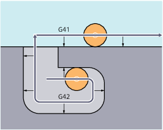
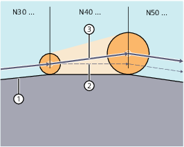

The control requires the following information in order to calculate the tool paths:
Information | Meaning |
|---|---|
Tool no. (T...), cutting edge no. (D...) | To calculate the distance between the tool path and the workpiece contour. |
Machining direction (G41/G42) | To determine the direction in which the tool path should be shifted. |
Machining plane (G17/G18/G19) | To determine the plane and therefore the axis directions in which compensation should be applied. |
This is the reason that a tool must be loaded (T function) and the tool cutting edge/tool compensation (D1 ... D9) activated no later than in the program block with the tool radius compensation selection.
A negative compensation value has the same significance as a change of offset side (G41 ↔ G42).
The wear parameter assigned to the diameter axis on tool selection can be defined as the diameter value using an MD. This assignment is not automatically altered when the plane is subsequently changed. To do this, the tool must be selected again after the plane change.
A change in compensation direction (G41 ↔ G42) can be programmed without an intermediate G40.
It is not possible to change the machining plane (G17/G18/G19) when G41/G42 is active.
The tool offset data block can be changed in compensation mode.
A changed tool radius already becomes active as from the block containing the new D number.
| Note |
The radius change or compensation movement is performed across the entire block and only reaches the new equidistance at the programmed end point. |
In the case of linear movements, the tool travels along an inclined path between the starting point and the end point:
① | Programmed contour |
② | Tool path without changing the tool offset data block in the active block |
③ | Tool path when the tool offset data block in the active block changes and the tool radius changes as a result |
Circular interpolation produces spiral movements.
The change can be made, e.g. using system variables. The sequence is the same as when changing the tool offset data block (D…).
| Note |
The modified values only take effect the next time T or D is programmed. The change does not apply until the next block. |
Compensation mode may only be interrupted by a certain number of consecutive blocks or M functions which do not contain traversing commands or positional data in the compensation plane.
| Note |
The maximum number of consecutive interruption blocks or M commands can be set using machine data. A block with a path distance of zero also counts as an interruption. |
The response of 2D tool radius compensation in certain machining situations can be set using the following setting data:
SD42490 $SC_CUTCOM_G40_STOPRE (retraction response for a preprocessing stop before deselecting tool radius compensation)
SD42496 $SC_CUTCOM_CLSD_CONT (tool radius compensation behavior with closed contour)
For details, see Parameter Manual Machine Data and Parameters.